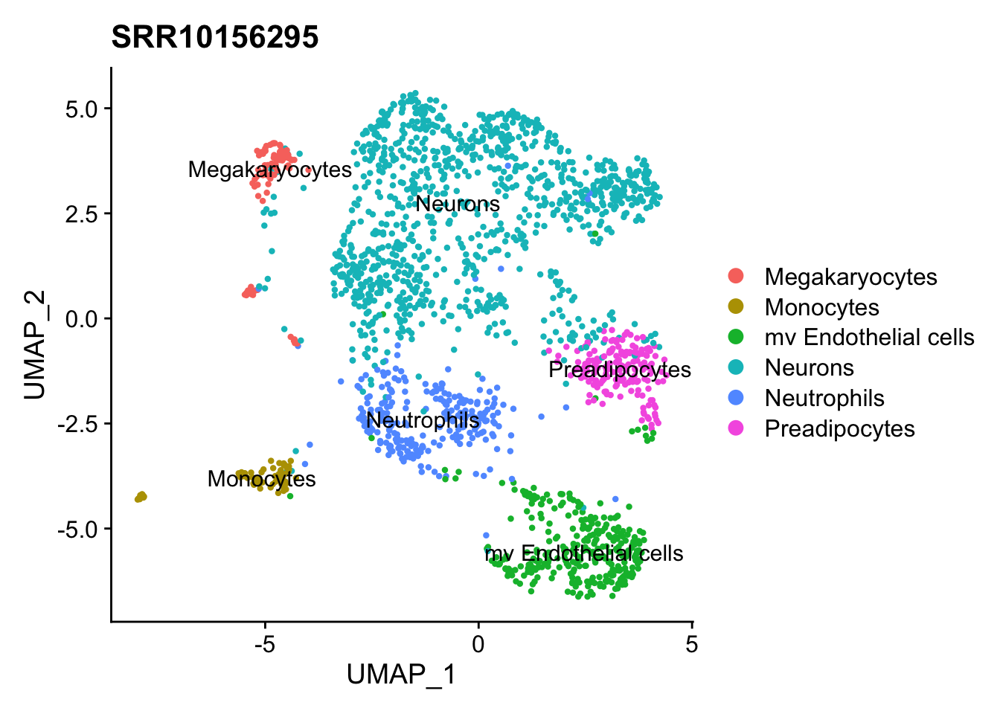

scSNVis
Note the use of the height parameter to determine how much vertical space the embedded application should occupy.
You can also use the shinyApp function to define an application inline rather then in an external directory.
In all of R code chunks above the echo = FALSE attribute is used. This is to prevent the R code within the chunk from rendering in the document alongside the Shiny components.
## Registered S3 method overwritten by 'cli':
## method from
## print.boxx spatstat## ── Attaching packages ─────────────────────────────────────── tidyverse 1.3.0 ──## ✓ tibble 3.0.4 ✓ dplyr 1.0.2
## ✓ tidyr 1.1.2 ✓ stringr 1.4.0
## ✓ readr 1.4.0 ✓ forcats 0.5.0
## ✓ purrr 0.3.4## ── Conflicts ────────────────────────────────────────── tidyverse_conflicts() ──
## x dplyr::between() masks data.table::between()
## x dplyr::filter() masks stats::filter()
## x dplyr::first() masks data.table::first()
## x dplyr::lag() masks stats::lag()
## x dplyr::last() masks data.table::last()
## x purrr::transpose() masks data.table::transpose()## Loading required package: SummarizedExperiment## Warning: package 'SummarizedExperiment' was built under R version 4.0.3## Loading required package: MatrixGenerics## Warning: package 'MatrixGenerics' was built under R version 4.0.3## Loading required package: matrixStats##
## Attaching package: 'matrixStats'## The following object is masked from 'package:dplyr':
##
## count##
## Attaching package: 'MatrixGenerics'## The following objects are masked from 'package:matrixStats':
##
## colAlls, colAnyNAs, colAnys, colAvgsPerRowSet, colCollapse,
## colCounts, colCummaxs, colCummins, colCumprods, colCumsums,
## colDiffs, colIQRDiffs, colIQRs, colLogSumExps, colMadDiffs,
## colMads, colMaxs, colMeans2, colMedians, colMins, colOrderStats,
## colProds, colQuantiles, colRanges, colRanks, colSdDiffs, colSds,
## colSums2, colTabulates, colVarDiffs, colVars, colWeightedMads,
## colWeightedMeans, colWeightedMedians, colWeightedSds,
## colWeightedVars, rowAlls, rowAnyNAs, rowAnys, rowAvgsPerColSet,
## rowCollapse, rowCounts, rowCummaxs, rowCummins, rowCumprods,
## rowCumsums, rowDiffs, rowIQRDiffs, rowIQRs, rowLogSumExps,
## rowMadDiffs, rowMads, rowMaxs, rowMeans2, rowMedians, rowMins,
## rowOrderStats, rowProds, rowQuantiles, rowRanges, rowRanks,
## rowSdDiffs, rowSds, rowSums2, rowTabulates, rowVarDiffs, rowVars,
## rowWeightedMads, rowWeightedMeans, rowWeightedMedians,
## rowWeightedSds, rowWeightedVars## Loading required package: GenomicRanges## Warning: package 'GenomicRanges' was built under R version 4.0.3## Loading required package: stats4## Loading required package: BiocGenerics## Warning: package 'BiocGenerics' was built under R version 4.0.3## Loading required package: parallel##
## Attaching package: 'BiocGenerics'## The following objects are masked from 'package:parallel':
##
## clusterApply, clusterApplyLB, clusterCall, clusterEvalQ,
## clusterExport, clusterMap, parApply, parCapply, parLapply,
## parLapplyLB, parRapply, parSapply, parSapplyLB## The following objects are masked from 'package:dplyr':
##
## combine, intersect, setdiff, union## The following objects are masked from 'package:stats':
##
## IQR, mad, sd, var, xtabs## The following objects are masked from 'package:base':
##
## anyDuplicated, append, as.data.frame, basename, cbind, colnames,
## dirname, do.call, duplicated, eval, evalq, Filter, Find, get, grep,
## grepl, intersect, is.unsorted, lapply, Map, mapply, match, mget,
## order, paste, pmax, pmax.int, pmin, pmin.int, Position, rank,
## rbind, Reduce, rownames, sapply, setdiff, sort, table, tapply,
## union, unique, unsplit, which.max, which.min## Loading required package: S4Vectors## Warning: package 'S4Vectors' was built under R version 4.0.3##
## Attaching package: 'S4Vectors'## The following objects are masked from 'package:dplyr':
##
## first, rename## The following object is masked from 'package:tidyr':
##
## expand## The following objects are masked from 'package:data.table':
##
## first, second## The following object is masked from 'package:base':
##
## expand.grid## Loading required package: IRanges## Warning: package 'IRanges' was built under R version 4.0.3##
## Attaching package: 'IRanges'## The following objects are masked from 'package:dplyr':
##
## collapse, desc, slice## The following object is masked from 'package:purrr':
##
## reduce## The following object is masked from 'package:data.table':
##
## shift## Loading required package: GenomeInfoDb## Warning: package 'GenomeInfoDb' was built under R version 4.0.3## Loading required package: Biobase## Warning: package 'Biobase' was built under R version 4.0.3## Welcome to Bioconductor
##
## Vignettes contain introductory material; view with
## 'browseVignettes()'. To cite Bioconductor, see
## 'citation("Biobase")', and for packages 'citation("pkgname")'.##
## Attaching package: 'Biobase'## The following object is masked from 'package:MatrixGenerics':
##
## rowMedians## The following objects are masked from 'package:matrixStats':
##
## anyMissing, rowMedians##
## Attaching package: 'SummarizedExperiment'## The following object is masked from 'package:Seurat':
##
## Assays## snapshotDate(): 2020-04-27## see ?SingleR and browseVignettes('SingleR') for documentation## loading from cache## see ?SingleR and browseVignettes('SingleR') for documentation## loading from cache## Warning: Using `as.character()` on a quosure is deprecated as of rlang 0.3.0.
## Please use `as_label()` or `as_name()` instead.
## This warning is displayed once per session.
## `summarise()` ungrouping output (override with `.groups` argument)snv_idx <- length(gene_seurat_matrix)
choose_seurat_matrix$choose <- 'NA'
choose_seurat_matrix$choose[choose_seurat_matrix[[snv_choose]] == '0'] <- '0'
choose_seurat_matrix$choose[choose_seurat_matrix[[snv_choose]] > 0 & choose_seurat_matrix[[snv_choose]] <=0.2] <- '0-0.2'
choose_seurat_matrix$choose[choose_seurat_matrix[[snv_choose]] > 0.2 & choose_seurat_matrix[[snv_choose]] <=0.4] <- '0.2-0.4'
choose_seurat_matrix$choose[choose_seurat_matrix[[snv_choose]] > 0.4 & choose_seurat_matrix[[snv_choose]] <= 0.6] <- '0.4-0.6'
choose_seurat_matrix$choose[choose_seurat_matrix[[snv_choose]] > 0.6 & choose_seurat_matrix[[snv_choose]] <=0.8] <- '0.6-0.8'
choose_seurat_matrix$choose[choose_seurat_matrix[[snv_choose]] > 0.8 & choose_seurat_matrix[[snv_choose]] <=1] <- '0.8-1'
ggplot(choose_seurat_matrix , aes(x = UMAP_1, y=UMAP_2)) +
geom_point(aes(color= factor(choose)), alpha = 0.5) +
geom_text(aes(label = SingleR.cluster.labels), data = class_avg) +
labs(title = paste0(snv_choose, '_', sample_id)) +
theme(text=element_text(family="Arial",size=16)) +
theme(panel.background = element_rect(fill='white', colour='black'),
panel.grid=element_blank(),
axis.ticks = element_line(color='black'),
axis.line = element_line(colour = "black"),
axis.title.x=element_text(colour='black', size=12, face = "italic"),
axis.title.y=element_text(colour='black', size=12, face = "italic"),
axis.text=element_text(colour='black',size=12,face = "italic"),
#legend.title=element_blank(),
legend.text=element_text(colour='black', size=12),
legend.key=element_blank()) +
theme(plot.title = element_text(size=18,colour = "black",face = "italic")) +
scale_color_manual(values = c('darkgrey','pink','red','red1','red2','red3','grey') , name = 'VAF')